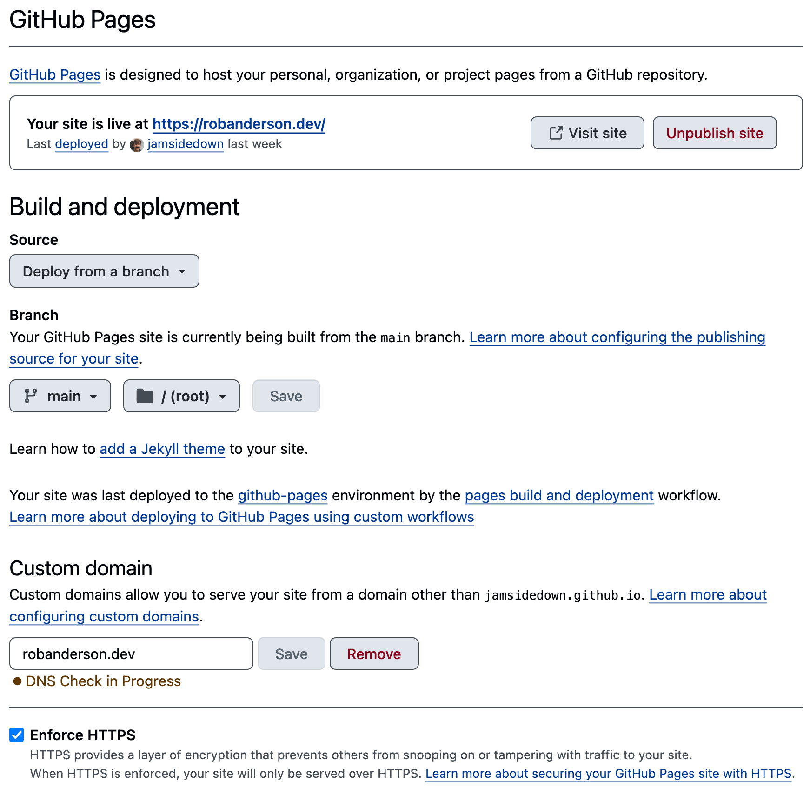

How I build and host my blog
2025-08-24Despite hosting websites on my home server and a VPS I also make use of GitHub Pages to host this website and blog.
I started using GitHub Pages in September 2020, as my broadband connection at the time didn't have a static IP address. I was relying on Duck DNS to have some sort of (semi)reliable connection to my home server via SSH, but Duck DNS only allowed for CNAME DNS records, so at the time I was only able to work out how to add subdomains rather than my top level domain.
GitHub Pages allowed me to use my domain to host my static website for free, which back in 2020 was just a landing page that I spent a day or two faffing around with the CSS for. Part of the free hosting arrangement is that the repository is public, so for anyone wanting to re-use any of the hacky CSS then they can do.
By default, GitHub Pages provides you with your own free subdomain at <username>.github.io, but it's very straight forward to add your own domain.
A static website is one that is made up of plain old HTML, CSS, and a sprinkling of JavaScript. Unlike the ASP.NET Core websites I host on my server, static websites don't have a database, and don't add any custom content to the web pages when someone views a page.
Setting up GitHub Pages
The process for setting up a static website is really easy, I followed whatever the previous incarnation of this quickstart article from GitHub was, and configured my DNS settings with my domain registrar to point at GitHub. There's a CNAME file in the root of the repository, but I think that's the only configuration I really had to do.
The Pages section of the repository does the majority of the heavy lifting if you're happy with a static site

Deploying to the website is done automatically by GitHub Actions whenever I push to the main branch of the repository. It's possible to use a custom build process, but I find it easiest just to add HTML files directly to my repository.
The blog
The blog section of my website is a little more involved, as I wanted to be able to write Markdown that could be converted to HTML for me.
I know Jekyll (Built into GitHub Pages) can handle the Markdown to HTML conversion for me, but my desire to use .NET wherever I can led me to using Statiq.Web.
Statiq.Web allows me to use a standard Razor Pages template, and write all of my individual posts using Markdown. I use dotnet run to convert all of the Markdown to HTML, which I can then copy across to my website's /blog directory.
It also generates an RSS feed and a sitemap, and includes posts based on the presence of a Date attribute in the header of the Markdown file.
It's currently a bit of a manual process, but I don't mind as it gives me some feeling of control, and I can ensure that my many unpublished drafts don't accidentally get included on my live site.
The blog's repository isn't public, but I'll share some of my config here to hopefully help anyone wanting to replicate a similar setup in the future.
Some code
Adding Statiq.Web is as simple as adding the NuGet package to my csproj file.
dotnet add package Statiq.Web --version 1.0.0-beta.60
Program.cs does a lot of the work
// Program.cs
using Blog;
await Bootstrapper
.Factory
.CreateWeb(args)
.AddSetting("Host", Constants.Host)
.AddSetting("LinkRoot", Constants.LinkRoot)
.AddSetting("LinksUseHttps", true)
.RunAsync();
// Constants.cs
namespace Blog;
public class Constants
{
public const string Host = "robanderson.dev";
public const string LinkRoot = "/blog";
public const string Url = $"https://{Host}{LinkRoot}";
}
Then the remaining config is done through a couple of yaml files and the Razor page template.
# theme/settings.yaml
SiteTitle: "Blog"
PostSources: "*.md"
Layout: _layout.cshtml
# input/site.yaml
FeedRss: true
FeedTitle: => "Rob Anderson's Blog"
FeedLink: => Constants.Url
FeedSources: => GetString("PostSources")
FeedFilter: => !string.IsNullOrEmpty(GetString("Date"))
FeedAuthor: Rob Anderson
FeedItemTitle: => GetString("Title")
FeedItemLink: => $"{Constants.Url}/" + GetString("Destination")
FeedItemDescription: => GetString("Meta")
FeedItemPublished: => GetDateTime("Date")
FeedOrderKey: GetString("Published")
FeedOrderDescending: true
FeedSize: 10
input/site.yaml has the config for generating RSS feeds too, though I haven't worked out yet which of the properties are optional, and which are required; either way it works. 🤷
<!-- theme/input/_layout.cshtml -->
<!DOCTYPE html>
<html lang="en">
<head>
<meta charset="utf-8">
<title>@Document.GetString("Title")</title>
<meta name="viewport" content="width=device-width, initial-scale=1">
@{
var meta = Document.GetString("Meta");
if (!string.IsNullOrEmpty(meta))
{
<meta name="description" content="@meta">
}
}
<link rel="icon" href="https://robanderson.dev/images/favicon.png">
<link rel="stylesheet" href="css/blog.css">
<link rel="stylesheet" href="https://fonts.googleapis.com/css?family=Source+Code+Pro&display=swap">
<link rel="stylesheet" href="https://fonts.googleapis.com/css?family=Source+Sans+Pro&display=swap">
<link rel="stylesheet" href="https://cdnjs.cloudflare.com/ajax/libs/highlight.js/11.7.0/styles/base16/espresso.min.css">
<link rel=alternate title="Rob Anderson's Blog" type=application/rss+xml href="site.rss">
<script src="js/highlight.min.js"></script>
</head>
<body>
<div class="background"></div>
<main>
<div class="terminal">
<div class="rendered">
@{
var home = Document.GetBool("IsHome") ? "../" : "./";
}
<a class="home" href="@home">Home</a>
<div class="centre">
<h1>@Document.GetString("Title")</h1>
@{
var date = Document.GetString("Date");
}
@if (!string.IsNullOrEmpty(date))
{
<span>@date</span>
}
</div>
<hr />
@RenderBody()
<hr />
@{
var startYear = 2023;
var currentYear = DateTime.Now.Year;
var copyrightYears = startYear == currentYear ? $"{currentYear}" : $"{startYear}-{currentYear}";
var copyrightStatement = $"© {copyrightYears} Rob Anderson";
<div class="centre">@copyrightStatement</div>
}
</div>
</div>
</main>
<script>
// add the syntax highlighting
document.addEventListener('DOMContentLoaded', (event) => {
document.querySelectorAll('code').forEach((el) => {
hljs.highlightElement(el);
});
});
// external links open in a new tab
window.onload = () => {
for (const link of document.getElementsByTagName('a')) {
if (!link.href.startsWith('https://robanderson.dev')) {
link.target = '_blank';
}
}
};
</script>
</body>
</html>
The @RenderBody() function call is what takes the content of each Markdown page and adds the rendered HTML in.
I also have a landing page to list the blog posts
<!-- input/index.cshtml -->
Title: Rob's Blog
IsHome: true
---
@{
IDocument[] posts = Outputs
.FromPipeline("Content")
.FilterSources(Document.GetString("PostSources"))
.Where(doc => !string.IsNullOrEmpty(doc.GetString("Date")))
.OrderByDescending(doc => doc.GetString("Date"))
.ToArray();
foreach (var post in posts)
{
<div class="post">
<span>@post.GetString("Date")</span>
@{
var link = $"./{post.Destination}";
var title = post.GetString("Title");
<a href="@link">@title</a>
}
</div>
}
}
The line .Where(doc => !string.IsNullOrEmpty(doc.GetString("Date"))) is what performs the filtering for live/draft blog posts, based on the headers of each post.
E.g. for the hosting-setup post (file at input/hosting-setup.md)
Title: My hosting setup
Date: 2025-04-30
Meta: Securing access to Ubuntu Server with Tailscale and Cloudflare Tunnels
---
This is a short(ish) blog post about...
The overall effect can be seen on GitHub.
Closing notes
Hopefully this helps someone else set up their own website or blog and host it for free. I think this is a great exercise for junior developers trying to break into the industry, as it gives them a place to show off their skills and learn something new.
.dev domains cost around £10 per year, so it really is an affordable way to showcase their coding and start their brand.